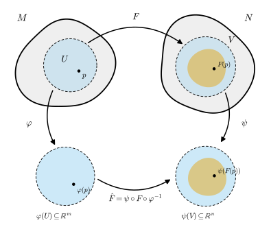
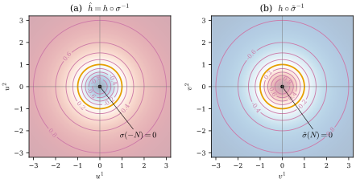

12.1 Smooth Functions and Smooth Maps
Goals
- smooth manifold 위의 함수와 manifold 사이의 map이 매끄럽다는 것을 coordinate representation으로 정의하고, 그 판정이 chart의 선택에 무관함을 증명할 수 있다.
- smooth map의 기본 성질(연속성, 국소성, 합성)을 증명하고, Chapter 2의 smoothness와 같은 이름을 쓸 자격이 있음을 설명할 수 있다.
- sphere로 들어가는 map, projection \(S^n \to \RP^n\), \(\GL(n, \R)\)의 곱과 inverse matrix가 smooth임을 좌표로 계산해 보일 수 있다.
- regular surface 위 함수와 map의 smoothness(Chapter 6)이 manifold로서의 smoothness와 같다는 compatibility proposition을 증명할 수 있다.
Prerequisites
- Definition 11.2.1 (transition map과 smooth compatibility), Definition 11.2.9 (smooth structure), Proposition 11.2.10, Proposition 11.2.14 (restriction and adjustment of charts), Example 11.2.13 (two structures on \(\R\))
- Definition 11.3.2 (the standard structure on \(S^n\)), Example 11.3.4 (hemisphere chart), Proposition 11.4.1 (\(\RP^n\)), Definition 11.4.4 (open submanifold), Example 11.4.8 (\(\GL(n, \R)\)), Definition 11.4.11 (product manifold)
- Definition 11.5.7, Proposition 11.5.8 (smoothness for manifolds with boundary)
- Definition 6.3.5 (surface 위의 smooth function), Definition 6.3.9 (surface 사이의 smooth map), Lemma 6.2.3
- Definition 2.2.11 (smooth map), Proposition 2.2.12 (operations on maps of class \(C^k\))
- Proposition 3.2.2 (pointwise criterion for continuity), Theorem 3.3.5, Theorem 3.3.15
Motivation
Chapter 11에서 smooth manifold를 정의했다. topological manifold \(M\) 위에 smooth structure를 정하면, \(M\)의 점들은 서로 smoothly compatible chart들로 좌표를 얻는다. 그런데 Chapter 11에서는 “\(M\) 위의 함수가 매끄럽다”는 말을 한 번도 정의하지 않았다. smooth structure를 도입한 목적이 바로 이 말에 뜻을 주는 것이었는데도 그렇다(Section 11.2 Motivation).
Section 11.2 Motivation의 생각을 다시 보자. 함수 \(f\colon M \to \R\)을 chart \((U, \varphi)\)로 옮긴 \(f \circ \varphi^{-1}\)은 \(\R^n\)의 open set \(\varphi(U)\) 위의 함수이므로 Definition 2.2.11의 뜻으로 smooth인지 물을 수 있다. 다른 chart \((V, \psi)\)로 옮긴 것과는 겹치는 곳에서 \(f \circ \psi^{-1} = (f \circ \varphi^{-1}) \circ (\varphi \circ \psi^{-1})\)로 이어진다((11.2.1)). smooth structure의 두 chart 사이에서는 transition map \(\varphi \circ \psi^{-1}\)이 언제나 매끄러우므로, 이 판정은 어느 chart로 하든 같은 답을 준다. 이 절은 이 관찰을 정의와 명제로 만든다. 함수 다음에는 manifold 사이의 map \(F\colon M \to N\)을 다룬다. 이번에는 \(M\)과 \(N\) 양쪽에 chart를 깔고, 좌표끼리의 map이 smooth인지 본다.
Section 6.3에서는 regular surface 위의 함수와 surface 사이의 map의 smoothness를 parametrization으로 정의했다. 둘러싼 공간 \(\R^3\) 안에서 만든 그 정의와 이 절의 정의가 같은 것을 말한다는 것이 이 장의 compatibility proposition이다(Proposition 12.1.11).

Smooth Functions
이 절에서 chart는 언제나 주어진 smooth structure에 속한 smooth chart를 뜻하고, \(\R^k\)에는 표준 구조(Example 11.2.11)를 준다. manifold라고 하면 경계가 없는 것이다. 경계를 갖는 경우는 절 끝의 Remark 12.1.12에서 다룬다.
Definition 12.1.1 (smooth function on a manifold). \(M\)이 smooth \(n\)-manifold이고 \(f\colon M \to \R^k\)라 하자. 모든 \(p \in M\)에 대하여 \(p\) 둘레의 smooth chart \((U, \varphi)\)가 있어서
가 Definition 2.2.11의 뜻으로 매끄러우면 \(f\)가 매끄럽다고 한다. \(k = 1\)이면 \(f\)를 \(M\) 위의 smooth function(매끄러운 함수)라 하고, \(M\) 위의 smooth function 전체의 집합을 \(C^\infty(M)\)으로 쓴다. \(\hat f\)를 chart \((U, \varphi)\)에 대한 \(f\)의 coordinate representation(좌표표현)이라 한다.
이 정의가 “smooth function”이라는 이름을 이어받을 자격이 있는지 확인하자. 첫째, \(M\)이 \(\R^n\)의 open set \(W\)이고 표준 구조를 주면, chart \((W, \id_W)\)에 대한 coordinate representation은 \(f\) 자신이다. 이때 Definition 12.1.1은 Definition 2.2.11과 같다(Example 12.1.3(a)). 둘째, regular surface에서는 parametrization \(\mathbf{x}\)가 chart의 inverse map \(\varphi^{-1}\) 노릇을 하므로 \(f \circ \varphi^{-1}\)은 Chapter 6의 coordinate representation \(f \circ \mathbf{x}\)(Definition 6.3.5)다. 두 정의가 같다는 것은 Proposition 12.1.11에서 증명한다. 정의는 chart를 하나 고르라고 한다. Chapter 6에서 Proposition 6.3.6이 한 일을 여기서는 다음 명제가 한다.
Proposition 12.1.2 (independence of the chart). \(M\)이 smooth \(n\)-manifold이고 \(f\colon M \to \R^k\)라 하자.
- (a) \(f\)가 매끄러우면, \(M\)의 모든 smooth chart \((V, \psi)\)에 대하여 \(f \circ \psi^{-1}\colon \psi(V) \to \R^k\)가 매끄럽다.
- (b) \(\mathcal{A}_0\)이 \(M\)의 smooth structure를 정하는 smooth atlas(Proposition 11.2.10(b))이면, \(f\)가 매끄러울 필요충분조건은 모든 \((U, \varphi) \in \mathcal{A}_0\)에 대하여 \(f \circ \varphi^{-1}\)이 smooth인 것이다.
- (c) smooth \(f\)는 연속이다.
이 명제가 말하는 것. 함수가 smooth인지 알려면 점마다 계산하기 편한 chart 하나로 확인하면 되고, 확인한 결과는 다른 모든 smooth chart에서도 성립한다. 특히 atlas 하나의 chart들로만 확인하면 충분하다.
Proof idea: 한 점 근처에서 정의가 준 chart \(\varphi\)를 끼워 \(f \circ \psi^{-1} = (f \circ \varphi^{-1}) \circ (\varphi \circ \psi^{-1})\)로 쪼갠다. 두 조각은 매끄럽고, smoothness는 국소적인 성질이다.
Proof. (a) \(x \in \psi(V)\)라 하고 \(q = \psi^{-1}(x)\)라 하자. 정의에 의해 \(q\) 둘레의 smooth chart \((U, \varphi)\)가 있어서 \(f \circ \varphi^{-1}\)이 \(\varphi(U)\)에서 매끄럽다. \(\psi(U \cap V)\)는 \(x\)를 포함하는 \(\R^n\)의 open set이고, 그 위에서
이다. \((U, \varphi)\)와 \((V, \psi)\)는 같은 smooth structure에 속하므로 매끄럽게 호환되고(Definition 11.2.9), transition map \(\varphi \circ \psi^{-1}\colon \psi(U \cap V) \to \varphi(U \cap V)\)는 매끄럽다. 그 값은 \(\varphi(U)\)에 있으므로 Proposition 2.2.12(b)에 의해 (12.1.2)는 \(\psi(U \cap V)\)에서 매끄럽다. 즉 \(\psi(V)\)의 모든 점은 \(f \circ \psi^{-1}\)이 smooth인 open neighborhood를 가진다. smoothness는 국소적인 성질이므로(Proposition 11.2.10의 증명 첫 문단) \(f \circ \psi^{-1}\)은 \(\psi(V)\)에서 매끄럽다.
(b) \(\mathcal{A}_0\)의 chart는 모두 smooth chart이므로(\(\mathcal{A}_0 \subseteq \overline{\mathcal{A}_0}\)), \(f\)가 매끄러우면 (a)에 의해 조건이 성립한다. 거꾸로 조건이 성립하면, \(\mathcal{A}_0\)이 \(M\)을 덮으므로 모든 점 \(p\) 둘레에 \(f \circ \varphi^{-1}\)이 smooth인 smooth chart \((U, \varphi) \in \mathcal{A}_0\)이 있다. 이것이 Definition 12.1.1의 조건이다.
(c) \(p \in M\)이고 \((U, \varphi)\)가 정의의 chart라 하자. \(U\) 위에서 \(f = (f \circ \varphi^{-1}) \circ \varphi\)이다. \(\varphi\)는 homeomorphism이고, smooth map \(f \circ \varphi^{-1}\)은 미분가능하므로 연속이다(Proposition 2.1.7). 따라서 \(f|_U\)는 연속이고, \(U\)는 \(p\)의 open neighborhood이므로 Proposition 3.2.2에 의해 \(f\)는 연속이다.
Example 12.1.3 (examples of smooth functions). (a) \(\R^n\)의 open set. \(W \subseteq \R^n\)이 open set이면 그 표준 구조는 chart 하나 \((W, \id_W)\)가 정한다(Example 11.4.5(a)). Proposition 12.1.2(b)를 \(\mathcal{A}_0 = \{(W, \id_W)\}\)에 쓰면, \(f\colon W \to \R^k\)가 Definition 12.1.1의 뜻으로 매끄러울 필요충분조건은 \(f = f \circ \id_W^{-1}\)이 Definition 2.2.11의 뜻으로 smooth인 것이다. 따라서 \(C^\infty(W)\)는 Chapter 2의 \(C^\infty(W)\)와 같은 집합이다.
(b) coordinate functions. \((U, \varphi)\)가 smooth chart이고 \(\varphi = (x^1, \dots, x^n)\)이라 하자. \(U\)를 open submanifold(Definition 11.4.4)로 보면 \((U, \varphi)\)는 \(U\)의 smooth chart이고, \(x^i \circ \varphi^{-1}(u) = u^i\)는 매끄럽다. 따라서 coordinate functions \(x^i\)는 \(C^\infty(U)\)의 원소다. 같은 이유로 \(\varphi\colon U \to \R^n\) 자체도 매끄럽다.
(c) sphere의 height function. \(S^n\)에 표준 구조(Definition 11.3.2)를 주고 \(h(x) = x^{n+1}\)이라 하자. \(\sigma^{-1}\)과 \(\tilde\sigma^{-1}\)의 마지막 성분((11.3.1))을 읽으면
이다. 둘 다 분모가 양수인 다항식의 몫이므로 매끄럽고, Proposition 12.1.2(b)에 의해 \(h \in C^\infty(S^n)\)이다. 두 식은 transition map \(u = v/\abs{v}^2\)(Proposition 11.3.1)으로 이어진다. 첫째 chart의 원점 \(u = 0\)은 남극 \(-N\)이고, 둘째 chart의 원점 \(v = 0\)은 북극 \(N\)이다(이 절에서는 \(S\)를 regular surface에 쓰므로 남극을 \(S\)라 부르지 않는다). 실제로 \(v \ne 0\)이면 \(\abs{u}^2 = 1/\abs{v}^2\)이므로 \(h \circ \sigma^{-1}(u) = (1/\abs{v}^2 - 1)/(1/\abs{v}^2 + 1) = (1 - \abs{v}^2)/(1 + \abs{v}^2)\)이다. 이것이 (12.1.2)의 한 예다. level set \(h = c\) (\(-1 \lt c \lt 1\))는 circle of latitude이고, 두 chart에서 각각 반지름 \(\sqrt{(1 + c)/(1 - c)}\)와 \(\sqrt{(1 - c)/(1 + c)}\)인 원으로 보인다(Figure 12.1.2).
(d) real projective space 위의 함수. \(f\colon \RP^n \to \R\), \(f[x] = (x^1)^2/\abs{x}^2\)을 보자. \(\lambda \ne 0\)이면 \((\lambda x^1)^2/\abs{\lambda x}^2 = (x^1)^2/\abs{x}^2\)이므로 대표를 어떻게 고르든 값이 같다. chart \((U_i, \varphi_i)\)에서 \(\varphi_i^{-1}(u) = [j_i(u)]\), \(j_i(u) = (u^1, \dots, u^{i-1}, 1, u^i, \dots, u^n)\)이므로((3.4.6)) \(f \circ \varphi_i^{-1}(u) = (j_i(u)^1)^2/(1 + \abs{u}^2)\)이다. 분모가 \(1\) 이상이므로 매끄럽다. \(\{(U_i, \varphi_i)\}\)가 표준 구조를 정하는 atlas이므로(Proposition 11.4.1) \(f \in C^\infty(\RP^n)\)이다. 예를 들어 \(n = 1\)이면 \(f \circ \varphi_1^{-1}(u) = 1/(1 + u^2)\), \(f \circ \varphi_2^{-1}(v) = v^2/(1 + v^2)\)이다.
Verification: verify/v-12-1-smooth-maps.py

Non-example 12.1.4. (a) smoothness는 구조에 달려 있다. Example 11.2.13의 구조 \(\mathcal{A}_3\)(\(\psi(x) = x^3\)이 정하는 구조)을 준 \(\R\)에서 \(f(x) = x\)는 매끄럽지 않다. \((\R, \psi) \in \mathcal{A}_3\)이고 \(f \circ \psi^{-1}(u) = u^{1/3}\)이 \(u = 0\)에서 미분가능하지 않으므로 Proposition 12.1.2(a)에 어긋난다. 반면 \(g(x) = x^3\)은 \(g \circ \psi^{-1}(u) = u\)이므로 \(g \in C^\infty(\R, \mathcal{A}_3)\)이고, \(g\)는 표준 구조에서도 매끄럽다. 따라서 \(C^\infty(\R, \mathcal{A}_1) \ne C^\infty(\R, \mathcal{A}_3)\)이다. 같은 topological manifold라도 구조가 다르면 smooth function의 모임이 다르다.
(b) 연속이지만 매끄럽지 않은 함수. \(S^1\) 위의 \(f(x) = \abs{x^2}\)는 연속이지만 \(p = (1, 0)\)에서 매끄럽지 않다. hemisphere chart \((U_1^+, \varphi_1^+)\)(Example 11.3.4)에서 \(\varphi_1^+(x) = x^2\), \((\varphi_1^+)^{-1}(w) = (\sqrt{1 - w^2}, w)\)이므로 \(f \circ (\varphi_1^+)^{-1}(w) = \abs{w}\)이고, 이것은 \(w = 0\)에서 미분가능하지 않다(Non-example 2.1.5). Chapter 6의 Non-example 6.3.8(a)의 1-dimensional 버전이다.
함수의 합과 곱은 coordinate representation의 합과 곱이므로 smooth function은 대수적 연산에 대해 닫혀 있다.
Proposition 12.1.5 (operations on \(C^\infty(M)\)). \(f, g \in C^\infty(M)\)이고 \(c \in \R\)이면 \(f + g\), \(cf\), \(fg\)는 \(C^\infty(M)\)에 속한다. \(f\)가 어디서도 \(0\)이 아니면 \(1/f \in C^\infty(M)\)이다. 따라서 \(C^\infty(M)\)은 real vector space이고 곱에 대해서도 닫혀 있다.
Proof. \(p \in M\)이고 \((U, \varphi)\)가 \(p\) 둘레의 smooth chart라 하자. Proposition 12.1.2(a)에 의해 \(f \circ \varphi^{-1}\)과 \(g \circ \varphi^{-1}\)은 \(\varphi(U)\)에서 매끄럽다. \((f + g) \circ \varphi^{-1} = f \circ \varphi^{-1} + g \circ \varphi^{-1}\), \((fg) \circ \varphi^{-1} = (f \circ \varphi^{-1})(g \circ \varphi^{-1})\), \((1/f) \circ \varphi^{-1} = 1/(f \circ \varphi^{-1})\)이므로 Proposition 2.2.12(a), (c)에 의해 모두 매끄럽다. \(cf\)는 상수함수 \(c\)와 \(f\)의 곱이다.
\(C^\infty(M)\)은 vector space이지만, \(\dim M \ge 1\)이면 finite-dimensional이 아니다. 이것은 Section 12.3에서 bump function으로 보인다.
Smooth Maps Between Manifolds
함수의 값이 \(\R^k\) 대신 다른 manifold에 있으면, 값 쪽에도 chart를 깐다.
Definition 12.1.6 (smooth map). \(M\)이 smooth \(m\)-manifold, \(N\)이 smooth \(n\)-manifold이고 \(F\colon M \to N\)이라 하자. 모든 \(p \in M\)에 대하여 \(p\) 둘레의 smooth chart \((U, \varphi)\)와 \(F(p)\) 둘레의 smooth chart \((V, \psi)\)가 있어서 \(F(U) \subseteq V\)이고
가 매끄러우면, \(F\)를 smooth map(매끄러운 사상)이라 한다. \(\hat F\)를 두 chart에 대한 \(F\)의 coordinate representation이라 한다.
조건 \(F(U) \subseteq V\)가 하는 일을 보자. 이 조건이 있어야 \(\hat F\)가 open set \(\varphi(U)\) 전체에서 정의되고, 그래야 Definition 2.2.11을 쓸 수 있다. 이 조건 없이 “\(\varphi(U \cap F^{-1}(V))\) 위에서 매끄럽다”고만 하면, \(F\)가 연속이 아닐 때 \(U \cap F^{-1}(V)\)가 open set이 아닐 수 있어서 말이 되지 않는다. Chapter 6의 Definition 6.3.9는 같은 문제를 \(\varphi\)의 연속성을 먼저 가정해서 피했다. 이 정의에서는 연속성이 정리로 따라 나온다(Proposition 12.1.7(a)). \(N = \R^k\)이면 chart \((\R^k, \id)\)를 쓸 수 있으므로 Definition 12.1.6은 Definition 12.1.1과 같다(Proposition 12.1.7(g)).
Proposition 12.1.7 (basic properties of smooth maps). \(M\), \(N\), \(P\)가 smooth manifold라 하자.
- (a) 연속성. smooth map \(F\colon M \to N\)은 연속이다.
- (b) chart에 무관함. \(F\colon M \to N\)이 매끄러우면, \(M\)의 모든 smooth chart \((U, \varphi)\)와 \(N\)의 모든 smooth chart \((V, \psi)\)에 대하여 \(\psi \circ F \circ \varphi^{-1}\)은 open set \(\varphi(U \cap F^{-1}(V))\)에서 매끄럽다.
- (c) 국소성. \(F\colon M \to N\)이 매끄러울 필요충분조건은 모든 점이 open neighborhood \(W\)를 가져서 \(F|_W\)(\(W\)는 open submanifold)가 smooth인 것이다.
- (d) 합성. \(F\colon M \to N\)과 \(G\colon N \to P\)가 매끄러우면 \(G \circ F\)도 매끄럽다.
- (e) identity map \(\id_M\), constant map, open submanifold의 inclusion map \(\iota\colon W \to M\)은 매끄럽다. 따라서 smooth map을 open submanifold로 제한한 \(F|_W = F \circ \iota\)는 매끄럽다.
- (f) 공역. \(W \subseteq N\)이 open set이고 \(F(M) \subseteq W\)이면, \(F\colon M \to N\)이 매끄러울 필요충분조건은 \(F\colon M \to W\)가 smooth인 것이다.
- (g) 앞의 정의들과의 일치. \(N = \R^k\)이면 \(F\)가 Definition 12.1.6의 뜻으로 매끄러울 필요충분조건은 Definition 12.1.1의 뜻으로 smooth인 것이다. \(M\), \(N\)이 각각 \(\R^m\), \(\R^n\)의 open set이면 그것은 Definition 2.2.11의 뜻으로 smooth인 것과 같다.
Proof idea: (b)가 핵심이다. 정의가 준 chart 쌍 \((\varphi', \psi')\)를 끼워 넣어 \(\psi \circ F \circ \varphi^{-1} = (\psi \circ \psi'^{-1}) \circ (\psi' \circ F \circ \varphi'^{-1}) \circ (\varphi' \circ \varphi^{-1})\)로 쪼갠다. 양 끝은 transition map이다. 나머지는 chart를 알맞게 줄이는 일이다.
Proof. (a) \(p \in M\)이고 \((U, \varphi)\), \((V, \psi)\)가 정의의 chart라 하자. \(U\) 위에서 \(F = \psi^{-1} \circ \hat F \circ \varphi\)이고 세 map은 모두 연속이다(\(\hat F\)는 미분가능하므로 연속, Proposition 2.1.7). \(U\)는 \(p\)의 open neighborhood이므로 Proposition 3.2.2에 의해 \(F\)는 연속이다.
(b) (a)에 의해 \(F^{-1}(V)\)는 열려 있으므로 \(\varphi(U \cap F^{-1}(V))\)는 open set이다. 그 점 \(x\)를 잡고 \(p = \varphi^{-1}(x)\)라 하자. 정의에서 \(p\) 둘레의 \((U', \varphi')\)와 \(F(p)\) 둘레의 \((V', \psi')\)가 있어서 \(F(U') \subseteq V'\)이고 \(\psi' \circ F \circ \varphi'^{-1}\)이 매끄럽다. \(O = U \cap U' \cap F^{-1}(V)\)는 \(p\)를 포함하는 open set이고 \(F(O) \subseteq V \cap V'\)이다. \(\varphi(O)\) 위에서
이다. 오른쪽 끝의 transition map은 \(\varphi(O)\)를 \(\varphi'(O) \subseteq \varphi'(U')\)으로 보내고, 가운데 map은 \(\varphi'(O)\)를 \(\psi'(V \cap V')\)으로 보내며, 왼쪽 끝의 transition map은 \(\psi'(V \cap V')\)에서 매끄럽다. 세 map이 모두 매끄러우므로 Proposition 2.2.12(b)에 의해 (12.1.5)는 \(x\)의 open neighborhood \(\varphi(O)\)에서 매끄럽다. smoothness는 국소적인 성질이므로 결론이 나온다.
(c) \(W\)의 smooth chart는 정의역이 \(W\)에 들어 있는 \(M\)의 smooth chart다(Proposition 11.4.3). (\(\Rightarrow\)) \(p \in W\)이고 \((U, \varphi)\), \((V, \psi)\)가 \(F\)에 대한 정의의 chart라 하자. \((U \cap W, \varphi|_{U \cap W})\)는 \(W\)의 smooth chart이고(Proposition 11.2.14(a)), \(F(U \cap W) \subseteq V\)이며, coordinate representation은 \(\hat F\)를 open set \(\varphi(U \cap W)\)로 제한한 것이므로 매끄럽다. (\(\Leftarrow\)) \(p \in M\)이고 \(W\)가 가정의 neighborhood이면, \(F|_W\)에 대한 정의의 chart \((U, \varphi)\)(\(U \subseteq W\))와 \((V, \psi)\)는 \(M\)과 \(N\)의 smooth chart로서 \(F\)에 대한 정의의 조건을 \(p\)에서 만족한다.
(d) \(p \in M\)이라 하자. \(G(F(p))\) 둘레의 chart \((W, \theta)\)를 잡는다. \(G\)는 연속이므로((a)) \(F(p)\) 둘레의 아무 chart를 \(G^{-1}(W)\)와의 교집합으로 줄여 \(G(V) \subseteq W\)인 chart \((V, \psi)\)를 얻는다(Proposition 11.2.14(a)). 같은 방식으로 \(F(U) \subseteq V\)인 \(p\) 둘레의 chart \((U, \varphi)\)를 얻는다. 그러면 \(\varphi(U)\)에서 \(\theta \circ (G \circ F) \circ \varphi^{-1} = (\theta \circ G \circ \psi^{-1}) \circ (\psi \circ F \circ \varphi^{-1})\)이고, (b)에 의해 두 map은 매끄러우므로 합성도 매끄럽다.
(e) \(\id_M\)은 chart 쌍 \((U, \varphi)\), \((U, \varphi)\)에 대해 coordinate representation이 \(\id_{\varphi(U)}\)이다. constant map \(F \equiv c\)는 \(c\) 둘레의 chart \((V, \psi)\)와 아무 chart \((U, \varphi)\)에 대해 coordinate representation이 상수 \(\psi(c)\)다. inclusion map \(\iota\colon W \to M\)은 \(W\)의 chart \((U, \varphi)\)(\(U \subseteq W\))와 \(M\)의 같은 chart에 대해 coordinate representation이 \(\id_{\varphi(U)}\)이다. 마지막 주장은 (d)다.
(f) (\(\Leftarrow\)) \(F = \iota \circ F\)이고 (d), (e)를 쓴다. (\(\Rightarrow\)) \((U, \varphi)\), \((V, \psi)\)가 \(F\colon M \to N\)에 대한 정의의 chart이면 \((V \cap W, \psi|_{V \cap W})\)는 \(W\)의 smooth chart이고, \(F(U) \subseteq V \cap W\)이며, coordinate representation은 \(\hat F\)와 같은 map이다.
(g) \(N = \R^k\)라 하자. \(F\)가 Definition 12.1.6의 뜻으로 매끄러우면 (b)를 \((V, \psi) = (\R^k, \id)\)에 쓴 것이 Definition 12.1.1의 조건이다. 거꾸로 Definition 12.1.1의 chart \((U, \varphi)\)에 \((V, \psi) = (\R^k, \id)\)를 짝지으면 \(F(U) \subseteq \R^k\)이고 coordinate representation \(F \circ \varphi^{-1}\)이 매끄럽다. \(M\), \(N\)이 open set이면 chart \((M, \id)\), \((N, \id)\)에 대한 coordinate representation이 \(F\) 자신이므로, (b)와 정의에서 두 조건이 같다.
Proposition 12.1.7(g)에 의해 앞으로 \(\R^k\)값 함수에 대해서는 두 정의를 구별하지 않는다. 또 (b)에 의해, smooth map의 coordinate representation은 어느 chart 쌍으로 계산해도 매끄럽다.
Examples: Products, Spheres, Projective Spaces, and Matrix Groups
Chapter 11의 기본 예들 사이의 자연스러운 map이 smooth임을 확인하자. 먼저 product manifold와 sphere로 들어가는 map을 판정하는 방법이 필요하다.
Proposition 12.1.8 (maps into products and spheres). \(M\)이 smooth manifold라 하자.
- (a) \(N_1 \times N_2\)가 product manifold(Definition 11.4.11)이면 projection \(\pi_i\colon N_1 \times N_2 \to N_i\)는 매끄럽다. map \(F = (F_1, F_2)\colon M \to N_1 \times N_2\)가 매끄러울 필요충분조건은 성분 \(F_i = \pi_i \circ F\)가 둘 다 smooth인 것이다.
- (b) inclusion map \(\iota\colon S^n \to \R^{n+1}\)은 매끄럽다. map \(G\colon M \to S^n\)이 매끄러울 필요충분조건은 \(\iota \circ G\colon M \to \R^{n+1}\)이 smooth인 것이다. 특히 \(W \subseteq \R^{n+1}\)이 \(S^n\)을 포함하는 open set이고 \(\tilde F\colon W \to \R^k\)가 매끄러우면 제한 \(\tilde F|_{S^n}\)은 매끄럽다.
Proof idea: (a)는 곱 chart에서 성분을 따로 읽는다. (b)의 핵심은 stereographic projection \(\sigma\)가 \(\R^{n+1}\)의 open set에서 정의된 smooth map \(\bar\sigma(x) = x'/(1 - x^{n+1})\)의 제한이라는 것이다. 그러면 \(\sigma \circ G = \bar\sigma \circ (\iota \circ G)\)가 된다.
Proof. (a) 곱 chart \((U_1 \times U_2, \varphi_1 \times \varphi_2)\)(Proposition 11.4.10)와 \((U_1, \varphi_1)\)에 대한 \(\pi_1\)의 coordinate representation은 \(\varphi_1 \circ \pi_1 \circ (\varphi_1 \times \varphi_2)^{-1}(x, y) = x\)이고 linear이므로 매끄럽다. \(\pi_2\)도 같다. \(F\)가 매끄러우면 Proposition 12.1.7(d)에 의해 \(F_i = \pi_i \circ F\)가 매끄럽다. 거꾸로 \(F_1\), \(F_2\)가 매끄럽다고 하자. \(F_i\)가 연속이므로 \(F\)는 연속이다(Theorem 3.3.15(b)). \(p \in M\)이고 \((U_1 \times U_2, \varphi_1 \times \varphi_2)\)가 \(F(p)\) 둘레의 곱 chart이면, \(p\) 둘레의 chart를 \(F^{-1}(U_1 \times U_2)\)로 줄여 \(F(V) \subseteq U_1 \times U_2\)인 chart \((V, \theta)\)를 얻는다. 그 위에서
\[ (\varphi_1 \times \varphi_2) \circ F \circ \theta^{-1} = \big(\varphi_1 \circ F_1 \circ \theta^{-1},\ \varphi_2 \circ F_2 \circ \theta^{-1}\big) \]
이고, 두 성분은 Proposition 12.1.7(b)에 의해 매끄럽다. 성분이 모두 smooth인 map은 매끄러우므로 \(F\)는 매끄럽다.
(b) \(\iota\)가 smooth임. \(\sigma^{-1}(u) = (2u, \abs{u}^2 - 1)/(\abs{u}^2 + 1)\)은 분모가 양수인 유리함수이므로 \(\R^n\)에서 \(\R^{n+1}\)으로 가는 smooth map이다. chart \((S^n \setminus \{N\}, \sigma)\)와 \((\R^{n+1}, \id)\)에 대한 \(\iota\)의 coordinate representation이 \(\sigma^{-1}\)이므로 북극 \(N\)이 아닌 점에서 정의의 조건이 성립한다. \(N\)에서는 \(\tilde\sigma^{-1}\)으로 같은 논증을 한다. 따라서 \(\iota\)는 매끄럽고, \(G\)가 매끄러우면 \(\iota \circ G\)도 매끄럽다(Proposition 12.1.7(d)).
역방향. \(\iota \circ G\)가 매끄럽다고 하자. \(\iota \circ G\)는 연속이고 \(S^n\)은 \(\R^{n+1}\)의 subspace이므로 \(G\)는 연속이다(Theorem 3.3.5(c)). \(p \in M\)이고 \(G(p) \ne N\)이라 하자(\(N\)은 북극). \(p\) 둘레의 chart를 open set \(G^{-1}(S^n \setminus \{N\})\)과의 교집합으로 줄여 \(G(U) \subseteq S^n \setminus \{N\}\)인 chart \((U, \varphi)\)를 얻는다. \(\Omega = \{x \in \R^{n+1} : x^{n+1} \ne 1\}\)은 open set이고 \(\bar\sigma(x) = (x^1, \dots, x^n)/(1 - x^{n+1})\)은 \(\Omega\)에서 매끄러우며 \(S^n \setminus \{N\}\) 위에서 \(\sigma\)와 같다. 따라서 \(\varphi(U)\)에서
이다. \(\iota \circ G \circ \varphi^{-1}\)은 Proposition 12.1.7(b), (g)에 의해 매끄럽고 값이 \(S^n \setminus \{N\} \subseteq \Omega\)에 있으므로 (12.1.6)은 매끄럽다. \(G(p) = N\)이면 \(\tilde\sigma\)와 \(\{x^{n+1} \ne -1\}\) 위의 \(x'/(1 + x^{n+1})\)로 같은 논증을 한다. 마지막 주장: \(\iota\)의 값은 \(W\)에 있으므로 \(\iota\colon S^n \to W\)는 매끄럽고(Proposition 12.1.7(f)), \(\tilde F|_{S^n} = \tilde F \circ \iota\)는 매끄럽다.
Verification: verify/v-12-1-smooth-maps.py (\(\bar\sigma \circ \sigma^{-1} = \id\), \(n = 1, 2, 3\))
Proposition 12.1.8(b)는 sphere로 들어가는 map을 \(\R^{n+1}\)값 map으로 판정하게 해 준다. 예를 들어 \(e(t) = (\cos t, \sin t)\)는 \(\iota \circ e\)가 매끄러우므로 \(\R\)에서 \(S^1\)으로 가는 smooth map이다. regular surface에 대해 같은 판정법을 주는 것이 Proposition 12.1.11(c)다.
Example 12.1.9 (the projection \(S^n \to \RP^n\)). \(X = \R^{n+1} \setminus \{0\}\)은 \(\R^{n+1}\)의 open submanifold이고, \(\pi\colon X \to \RP^n\)은 projection(Definition 3.4.11)이다.
(a) \(\pi\)는 매끄럽다. \(x \in X\)이면 \(x^i \ne 0\)인 \(i\)가 있다. \(X_i = \{x \in X : x^i \ne 0\}\)은 \(x\)를 포함하는 open set이고 \(\pi(X_i) = U_i\)이다. Proposition 3.4.15의 증명에서 \(X_i\) 위에서 \(\varphi_i \circ \pi = h_i\), \(h_i(x) = (x^1/x^i, \dots, \widehat{x^i/x^i}, \dots, x^{n+1}/x^i)\)이었다. 따라서 chart \((X_i, \id)\)와 \((U_i, \varphi_i)\)에 대한 \(\pi\)의 coordinate representation은 \(h_i\)이고, 분모가 \(0\)이 아닌 유리함수이므로 매끄럽다.
(b) \(\pi_S = \pi \circ \iota\colon S^n \to \RP^n\)(Proposition 3.5.7)은 매끄럽다. Proposition 12.1.8(b)에 의해 \(\iota\colon S^n \to \R^{n+1}\)은 매끄럽고 값이 \(X\)에 있으므로 \(\iota\colon S^n \to X\)는 매끄럽다(Proposition 12.1.7(f)). (a)와 합성하면 \(\pi_S\)는 매끄럽다. 좌표로 보자. hemisphere chart \((U_i^+, \varphi_i^+)\)(Example 11.3.4)는 \(x^i \gt 0\)인 점들이므로 \(\pi_S(U_i^+) \subseteq U_i\)이다. \((\varphi_i^+)^{-1}(w)\)의 \(i\)번째 성분은 \(\sqrt{1 - \abs{w}^2}\)이고 나머지 성분을 순서대로 모으면 \(w\)이므로
이다. \(U_i^-\)에서는 \(i\)번째 성분이 \(-\sqrt{1 - \abs{w}^2}\)이므로 coordinate representation이 \(-w/\sqrt{1 - \abs{w}^2}\)이다. (12.1.7)은 Example 2.3.2(c)의 diffeomorphism \(B^n \to \R^n\)이다. 이 사실은 Section 12.2에서 \(\pi_S\)가 local diffeomorphism임을 보이는 데 쓴다.
Verification: verify/v-12-1-smooth-maps.py (\(n = 1, 2, 3\)의 모든 \(i\))
Example 12.1.10 (multiplication and inversion in \(\GL(n, \R)\)). \(\GL(n, \R)\)은 \(M(n, \R)\)의 open submanifold이고, 성분 \(A^i_j\)가 전체를 덮는 chart 하나의 좌표다(Example 11.4.7, Example 11.4.8). product manifold \(\GL(n, \R) \times \GL(n, \R)\)은 곱 chart 하나로 덮이고 그 좌표는 두 행렬의 성분 \(2n^2\)개다. 이 chart들로 세 map을 보자.
- (a) determinant. \(\det\colon \GL(n, \R) \to \R\)은 성분의 다항식이므로((1.6.5)) 매끄럽다.
- (b) 곱. \(\mu(A, B) = AB\)의 성분 \((AB)^i_j = \sum_{k=1}^n A^i_k B^k_j\)는 좌표의 다항식이므로 \(\mu\colon \GL(n, \R) \times \GL(n, \R) \to M(n, \R)\)는 매끄럽다. \(\det(AB) = \det A\,\det B \ne 0\)이므로(Theorem 1.6.8(a)) 값은 \(\GL(n, \R)\)에 있고, Proposition 12.1.7(f)에 의해 \(\mu\colon \GL(n, \R) \times \GL(n, \R) \to \GL(n, \R)\)는 매끄럽다.
- (c) inverse matrix. \(A\)가 invertible이고 열이 \(a_1, \dots, a_n\)이라 하자. \(A^{-1}\)의 \(j\)번째 열 \(x\)는 \(Ax = e_j\), 즉 \(e_j = \sum_k x^k a_k\)를 만족한다. \(A\)의 \(i\)번째 열을 \(e_j\)로 바꾼 행렬을 \(A_{i \leftarrow e_j}\)라 하면, determinant의 multilinearity와 alternating 성질(Theorem 1.6.5)에서
이다. \(k \ne i\)인 항은 같은 열 \(a_k\)가 두 번 나오므로 \(0\)이다(Lemma 1.6.2(b)). 분자는 성분의 다항식이고 분모 \(\det A\)는 \(\GL(n, \R)\)에서 \(0\)이 아니므로, \(\operatorname{inv}(A) = A^{-1}\)은 매끄럽다(Proposition 2.2.12(c)). 값이 \(\GL(n, \R)\)에 있으므로 \(\operatorname{inv}\colon \GL(n, \R) \to \GL(n, \R)\)은 매끄럽다. 예를 들어 \(n = 2\)이면
\[ \begin{pmatrix} a & b \\ c & d \end{pmatrix}^{-1} = \frac{1}{ad - bc}\begin{pmatrix} d & -b \\ -c & a \end{pmatrix} \]
이다. 이렇게 smooth manifold이면서 군 연산이 smooth인 대상을 Lie group이라 하며, Chapter 20에서 다룬다.
Verification: verify/v-12-1-smooth-maps.py (\(n = 2, 3\)에서 (12.1.8)과 \(\det(AB) = \det A\,\det B\))
Compatibility with Regular Surfaces
regular surface \(S \subseteq \R^3\)(Definition 6.1.1)는 parametrization의 inverse map들로 이루어진 smooth atlas \(\mathcal{A}_S = \{(\mathbf{x}(U), \mathbf{x}^{-1}) : \mathbf{x}\colon U \to S \text{는 parametrization}\}\)를 가진다. 두 chart 사이의 transition map이 change of parameters이고, 이것이 diffeomorphism이기 때문이다(Theorem 6.3.1). 이것이 Chapter 11의 compatibility proposition이다(Section 11.6) [확인 필요: Section 11.6 미작성 — 참조 번호 확정 필요]. 앞으로 regular surface에는 \(\mathcal{A}_S\)가 정하는 smooth structure를 주고, 그 open set에는 open submanifold의 구조를 준다.
Proposition 12.1.11 (compatibility proposition). \(S\), \(S_1\), \(S_2\)가 regular surface이고 위의 smooth structure를 준다고 하자.
- (a) \(O \subseteq S\)가 open set이고 \(f\colon O \to \R\)이면, \(f\)가 Definition 6.3.5의 뜻으로 매끄러울 필요충분조건은 \(f \in C^\infty(O)\)(Definition 12.1.1)인 것이다.
- (b) \(O \subseteq S_1\)이 open set이고 \(\varphi\colon O \to S_2\)이면, \(\varphi\)가 Definition 6.3.9의 뜻으로 매끄러울 필요충분조건은 Definition 12.1.6의 뜻으로 smooth인 것이다.
- (c) \(M\)이 smooth manifold이고 \(F\colon M \to S\)이면, \(F\)가 매끄러울 필요충분조건은 \(\iota \circ F\colon M \to \R^3\)이 smooth인 것이다(\(\iota\colon S \to \R^3\)은 inclusion map). 특히 \(\iota\)는 매끄럽다.
이 명제가 말하는 것. Chapter 6에서 parametrization으로 정의한 smoothness와 이 장에서 chart로 정의한 smoothness는 같은 것이다. 그래서 Chapter 6의 결과(Proposition 6.3.6, Proposition 6.3.10, Example 6.3.12 등)는 manifold의 언어로 그대로 읽을 수 있다. (c)는 Proposition 12.1.8(b)의 surface판이고, Chapter 6의 판정법 Proposition 6.3.10(a)를 정의역이 manifold인 경우로 넓힌 것이다.
Proof idea: parametrization \(\mathbf{x}\)가 주는 chart \((\mathbf{x}(U), \mathbf{x}^{-1})\)에 대한 coordinate representation은 \(f \circ (\mathbf{x}^{-1})^{-1} = f \circ \mathbf{x}\)로, Chapter 6의 coordinate representation 그 자체다. 두 정의는 “어떤 parametrization(chart)에 대해”와 “모든 parametrization(chart)에 대해” 사이를 오가는데, 그 다리는 이미 놓여 있다(Proposition 12.1.2, Proposition 12.1.7(b)). (c)에서는 \(\mathbf{x}^{-1}\)을 국소적으로 \(\R^3\)의 smooth map으로 바꾸는 Lemma 6.2.3을 쓴다.
Proof. 먼저 관찰 하나. \(\mathbf{x}\colon U \to S\)가 parametrization이고 \(\mathbf{x}(U) \subseteq O\)이면 \((\mathbf{x}(U), \mathbf{x}^{-1})\)는 \(\mathcal{A}_S\)의 chart이고 정의역이 \(O\)에 들어 있으므로 open submanifold \(O\)의 smooth chart다(Proposition 11.4.3). 또 \(p \in O\)이면 \(p \in \mathbf{x}(U) \subseteq O\)인 parametrization이 있다. \(p\) 근처의 parametrization의 정의역을 open set \(\mathbf{x}^{-1}(O \cap \mathbf{x}(U))\)로 줄이면 되기 때문이다(Definition 6.3.5 뒤의 설명).
(a) (\(\Rightarrow\)) \(p \in O\)라 하자. Definition 6.3.5에 의해 \(p \in \mathbf{x}(U) \subseteq O\)이고 \(f \circ \mathbf{x}\)가 smooth인 parametrization \(\mathbf{x}\)가 있다. 관찰에 의해 \((\mathbf{x}(U), \mathbf{x}^{-1})\)는 \(O\)의 \(p\) 둘레의 smooth chart이고, coordinate representation \(f \circ (\mathbf{x}^{-1})^{-1} = f \circ \mathbf{x}\)가 매끄럽다. 이것이 Definition 12.1.1의 조건이다. (\(\Leftarrow\)) \(p \in O\)이고 \(p \in \mathbf{x}(U) \subseteq O\)인 parametrization \(\mathbf{x}\)를 잡자. \((\mathbf{x}(U), \mathbf{x}^{-1})\)는 \(O\)의 smooth chart이므로 Proposition 12.1.2(a)에 의해 \(f \circ \mathbf{x}\)는 매끄럽다. 이것이 Definition 6.3.5의 조건이다.
(b) (\(\Rightarrow\)) Definition 6.3.9의 parametrization \(\mathbf{x}_1\), \(\mathbf{x}_2\)가 주는 chart \((\mathbf{x}_1(U_1), \mathbf{x}_1^{-1})\)(\(O\)의 chart)와 \((\mathbf{x}_2(U_2), \mathbf{x}_2^{-1})\)(\(S_2\)의 chart)는 \(\varphi(\mathbf{x}_1(U_1)) \subseteq \mathbf{x}_2(U_2)\)를 만족하고, coordinate representation \(\mathbf{x}_2^{-1} \circ \varphi \circ \mathbf{x}_1\)이 매끄럽다. 이것이 Definition 12.1.6의 조건이다. (\(\Leftarrow\)) \(\varphi\)는 연속이다(Proposition 12.1.7(a)). \(p \in O\)라 하고 \(\varphi(p)\) 근처의 parametrization \(\mathbf{x}_2\colon U_2 \to S_2\)를 잡는다. \(\varphi^{-1}(\mathbf{x}_2(U_2))\)는 \(p\)를 포함하는 \(O\)의 open set이므로, 관찰에 의해 \(p \in \mathbf{x}_1(U_1) \subseteq \varphi^{-1}(\mathbf{x}_2(U_2))\)인 parametrization \(\mathbf{x}_1\)이 있다. 그러면 \(\varphi(\mathbf{x}_1(U_1)) \subseteq \mathbf{x}_2(U_2)\)이고, Proposition 12.1.7(b)에 의해 \(\mathbf{x}_2^{-1} \circ \varphi \circ \mathbf{x}_1\)은 매끄럽다. 이것이 Definition 6.3.9의 조건이다.
(c) \(\iota\)가 smooth임. chart \((\mathbf{x}(U), \mathbf{x}^{-1})\)와 \((\R^3, \id)\)에 대한 \(\iota\)의 coordinate representation은 \(\iota \circ \mathbf{x} = \mathbf{x}\)이고, 이것은 Definition 6.1.1의 조건 (1)에 의해 매끄럽다. 따라서 \(F\)가 매끄러우면 \(\iota \circ F\)도 매끄럽다(Proposition 12.1.7(d)). 역방향. \(\iota \circ F\)가 매끄럽다고 하자. \(\iota \circ F\)는 연속이고 \(S\)는 subspace이므로 \(F\)는 연속이다(Theorem 3.3.5(c)). \(p \in M\)이고 \(\mathbf{x}\colon U \to S\)가 \(F(p)\) 근처의 parametrization이라 하자. \(p\) 둘레의 chart를 \(F^{-1}(\mathbf{x}(U))\)로 줄여 \(F(V) \subseteq \mathbf{x}(U)\)인 chart \((V, \theta)\)를 얻는다. \(\Phi = \iota \circ F \circ \theta^{-1}\colon \theta(V) \to \R^3\)은 Proposition 12.1.7(b), (g)에 의해 매끄럽고 값이 \(\mathbf{x}(U)\)에 있으므로, Lemma 6.2.3에 의해 \(\mathbf{x}^{-1} \circ \Phi = \mathbf{x}^{-1} \circ F \circ \theta^{-1}\)은 매끄럽다. 이것은 chart \((V, \theta)\)와 \((\mathbf{x}(U), \mathbf{x}^{-1})\)에 대한 \(F\)의 coordinate representation이므로 \(F\)는 매끄럽다.
The Case of Manifolds with Boundary
Remark 12.1.12 (smooth maps between manifolds with boundary). \(M\), \(N\)이 smooth manifold with boundary(Definition 11.5.9)이면 Definition 12.1.1과 Definition 12.1.6을 글자 그대로 쓴다. 다만 coordinate representation의 정의역 \(\varphi(U)\)가 \(\mathbb{H}^m\)의 open set일 수 있으므로, coordinate representation의 smoothness는 Definition 11.5.7의 뜻으로 읽는다. 이 절의 증명이 쓴 것은 smoothness의 국소성, 합성의 smoothness, open set으로의 제한, smooth map의 연속성뿐이고, 넷 모두 넓힌 정의에서 성립한다(Proposition 11.5.8. 연속성은 smooth extension이 연속이기 때문이다). 따라서 Proposition 12.1.2, 12.1.5, 12.1.7이 그대로 성립한다. 예를 들어 닫힌구간 \([0, 1]\)(Example 11.5.2(b))에서 inclusion map \([0, 1] \to \R\)은 매끄럽다. boundary chart \(\psi_0(x) = x\)에 대한 coordinate representation이 \([0, 1)\) 위의 \(x \mapsto x\)이고, \(\R\) 전체의 identity map이 그 smooth extension이다. 반면 \(f(x) = \sqrt{x}\)는 \([0, 1]\)에서 연속이지만 \(0\)에서 매끄럽지 않다. \(0\) 근처의 smooth extension \(\tilde f\)가 있다면 \(\tilde f'(0) = \lim_{x \to 0^+} (\sqrt{x} - 0)/x\)이 존재해야 하는데, 이 극한은 \(+\infty\)로 발산한다.
Summary
- \(f\colon M \to \R^k\)는 점마다 어떤 smooth chart에 대한 coordinate representation \(f \circ \varphi^{-1}\)이 매끄러우면 매끄럽다. 그러면 모든 smooth chart에 대해 매끄럽고, atlas 하나로 확인하면 충분하다(Proposition 12.1.2).
- \(F\colon M \to N\)은 \(F(U) \subseteq V\)인 chart 쌍에 대한 coordinate representation \(\psi \circ F \circ \varphi^{-1}\)이 매끄러우면 매끄럽다. smooth map은 연속이고, 국소적으로 판정되며, 합성에 대해 닫혀 있다(Proposition 12.1.7). \(\R^n\)의 open set 사이에서는 Chapter 2의 smoothness와 같다.
- smoothness는 구조에 달려 있다. \((\R, \mathcal{A}_3)\)에서 \(f(x) = x\)는 매끄럽지 않다.
- \(S^n\)으로 들어가는 map은 \(\R^{n+1}\)값 map으로, 곱으로 들어가는 map은 성분으로 판정한다. projection \(\pi_S\colon S^n \to \RP^n\), \(\GL(n, \R)\)의 곱과 inverse matrix는 매끄럽다.
- compatibility proposition: regular surface 위 함수와 surface 사이 map의 smoothness(Chapter 6)은 manifold로서의 smoothness와 같다(Proposition 12.1.11).
다음 절에서는 두 smooth manifold가 “smooth manifold로서 같다”는 것, 곧 diffeomorphism을 정의한다. Chapter 11에서 남긴 두 질문, \(\R\) 위의 서로 다른 구조 \(\mathcal{A}_1\)과 \(\mathcal{A}_3\)이 manifold로서도 다른지, torus \(T^2\)와 torus of revolution \(T_{R,r}\)이 smooth manifold로서도 같은지에 답한다.
Exercises
Exercise 12.1.1 ★ \(f\colon S^2 \to \R\), \(f(x) = x^1x^2\)의 두 stereographic projection chart에 대한 coordinate representation \(f \circ \sigma^{-1}\), \(f \circ \tilde\sigma^{-1}\)을 구하고, \(f \in C^\infty(S^2)\)임을 보여라.
Solution
(11.3.1)에서 \(\sigma^{-1}(u)\)와 \(\tilde\sigma^{-1}(u)\)의 앞 두 성분은 모두 \(2u^1/(\abs{u}^2 + 1)\), \(2u^2/(\abs{u}^2 + 1)\)이다. 따라서
\[ f \circ \sigma^{-1}(u) = \frac{4u^1u^2}{(\abs{u}^2 + 1)^2}, \qquad f \circ \tilde\sigma^{-1}(v) = \frac{4v^1v^2}{(\abs{v}^2 + 1)^2} \]
이다. 둘 다 분모가 양수인 다항식의 몫이므로 매끄럽고, \(\{\sigma, \tilde\sigma\}\)는 표준 구조를 정하는 atlas이므로 Proposition 12.1.2(b)에 의해 \(f \in C^\infty(S^2)\)이다. (또는 \(f\)는 다항식 \(x^1x^2\)을 \(S^2\)로 제한한 것이므로 Proposition 12.1.8(b)의 마지막 주장에 의해 매끄럽다.)
Verification: verify/v-12-1-smooth-maps.py
Exercise 12.1.2 ★ 참인지 거짓인지 판별하고 이유를 써라. (a) \(C^\infty(M)\)의 원소는 모두 연속이다. (b) 두 smooth manifold 사이의 homeomorphism은 언제나 매끄럽다. (c) \(F\colon M \to N\)이 매끄럽고 \(W \subseteq M\)이 open set이면 \(F|_W\)는 매끄럽다. (d) identity map \(\id\colon (\R, \mathcal{A}_1) \to (\R, \mathcal{A}_3)\)은 매끄럽다.
Solution
(a) 참. Proposition 12.1.2(c).
(b) 거짓. \(\id\colon (\R, \mathcal{A}_3) \to (\R, \mathcal{A}_1)\)은 homeomorphism이지만, chart \(\psi(x) = x^3\)과 \(\id\)에 대한 coordinate representation이 \(\id \circ \id \circ \psi^{-1}(u) = u^{1/3}\)이어서 \(0\)에서 미분가능하지 않다. Proposition 12.1.7(b)에 의해 매끄럽지 않다.
(c) 참. Proposition 12.1.7(e).
(d) 참. chart \((\R, \id) \in \mathcal{A}_1\)과 \((\R, \psi) \in \mathcal{A}_3\)에 대한 coordinate representation은 \(\psi \circ \id \circ \id^{-1}(x) = x^3\)이고 매끄럽다. (b)와 비교하면, 한 방향은 매끄럽고 반대 방향은 매끄럽지 않은 homeomorphism이다.
Exercise 12.1.3 ★ \(f\colon \RP^1 \to \R\), \(f[x^1 : x^2] = x^1x^2/\big((x^1)^2 + (x^2)^2\big)\)이 잘 정의되고 smoothness를 보여라. \(f \circ \varphi_1^{-1}\)과 \(f \circ \varphi_2^{-1}\)을 구하고, 두 식이 transition map \(\varphi_2 \circ \varphi_1^{-1}(u) = 1/u\)(Example 11.4.2)로 이어짐을 확인하여라.
Solution
분자와 분모가 모두 \(\lambda^2\)배가 되므로 값은 대표에 무관하다. \(\varphi_1^{-1}(u) = [1 : u]\), \(\varphi_2^{-1}(v) = [v : 1]\)이므로 \(f \circ \varphi_1^{-1}(u) = u/(1 + u^2)\), \(f \circ \varphi_2^{-1}(v) = v/(v^2 + 1)\)이다. 둘 다 분모가 양수인 유리함수이므로 매끄럽고, Proposition 12.1.2(b)에 의해 \(f \in C^\infty(\RP^1)\)이다. \(u \ne 0\)이고 \(v = 1/u\)이면 \(v/(v^2 + 1) = (1/u)/(1/u^2 + 1) = u/(1 + u^2)\)이므로 (12.1.2)와 맞는다.
Verification: verify/v-12-1-smooth-maps.py
Exercise 12.1.4 ★ \(F\colon S^1 \to S^1\), \(F(x, y) = (x^2 - y^2,\ 2xy)\)가 잘 정의된 smooth map임을 보여라. \(S^1\)의 각 chart \(\alpha\)(Example 11.3.7)에 대해 \(\alpha \circ F \circ \alpha^{-1}(t) = 2t\) (\(\abs{t} \lt \pi/2\))임을 보여라.
Solution
\((x^2 - y^2)^2 + (2xy)^2 = (x^2 + y^2)^2 = 1\)이므로 값은 \(S^1\)에 있다. \(\iota \circ F\)는 다항식 map \(\R^2 \to \R^2\)을 \(S^1\)으로 제한한 것이므로 Proposition 12.1.8(b)의 마지막 주장에 의해 매끄럽고, 같은 명제의 앞 주장에 의해 \(F\colon S^1 \to S^1\)은 매끄럽다. \(\alpha^{-1}(t) = (\cos t, \sin t)\)이므로 \(F(\alpha^{-1}(t)) = (\cos^2 t - \sin^2 t,\ 2\sin t\cos t) = (\cos 2t, \sin 2t)\)이다. \(\abs{t} \lt \pi/2\)이면 \(2t \in (-\pi, \pi)\)이므로 \(\alpha(\cos 2t, \sin 2t) = 2t\)이다.
Verification: verify/v-12-1-smooth-maps.py
Exercise 12.1.5 ★★ \(A\)가 \((n+1) \times (n+1)\) invertible matrix일 때 \(\tilde A\colon \RP^n \to \RP^n\), \(\tilde A[x] = [Ax]\)가 잘 정의된 smooth map임을 보여라.
Hint
\(\tilde A \circ \pi = \pi \circ A\)이다. \(\varphi_j \circ \tilde A \circ \varphi_i^{-1}\)을 \(h_j\)와 \(j_i\)로 써 본다.
Solution
잘 정의됨. \(x \ne 0\)이면 \(A\)가 invertible이므로 \(Ax \ne 0\)이고, \(A(\lambda x) = \lambda Ax\)이므로 \([Ax]\)는 대표에 무관하다. smoothness. \([x] \in U_i\)이고 \(\tilde A[x] \in U_j\)라 하자. \(\tilde A\)는 연속이다(\(\tilde A \circ \pi = \pi \circ A\)가 연속이고 \(\pi\)가 quotient map이므로, Theorem 3.4.7(a)). 따라서 \(W = U_i \cap \tilde A^{-1}(U_j)\)는 \([x]\)를 포함하는 open set이고, 그 위에서 \(\varphi_i^{-1}(u) = [j_i(u)]\)이므로
\[ \begin{aligned} \varphi_j \circ \tilde A \circ \varphi_i^{-1}(u) &= \varphi_j[A\,j_i(u)] \\ &= h_j\big(A\,j_i(u)\big) \qquad (u \in \varphi_i(W)) \end{aligned} \]
이다. \(u \in \varphi_i(W)\)이면 \((A\,j_i(u))^j \ne 0\)이므로 이것은 분모가 \(0\)이 아닌 유리함수이고 매끄럽다. chart \((W, \varphi_i|_W)\)와 \((U_j, \varphi_j)\)는 Definition 12.1.6의 조건을 \([x]\)에서 만족하므로 \(\tilde A\)는 매끄럽다.
Verification: verify/v-12-1-smooth-maps.py (\(n = 2\)의 한 예)
Exercise 12.1.6 ★★ \(F\colon M \to N\)이 연속이라 하자. \(F\)가 매끄러울 필요충분조건은 \(N\)의 모든 smooth chart \((V, \psi = (y^1, \dots, y^n))\)에 대하여 \(y^i \circ F\colon F^{-1}(V) \to \R\)가 모두 smooth인 것임을 보여라.
Solution
(\(\Rightarrow\)) \(F^{-1}(V)\)는 open submanifold이고 \(F|_{F^{-1}(V)}\colon F^{-1}(V) \to V\)는 매끄럽다(Proposition 12.1.7(e), (f)). coordinate functions \(y^i\)는 \(C^\infty(V)\)의 원소이므로(Example 12.1.3(b)) 합성 \(y^i \circ F\)는 매끄럽다.
(\(\Leftarrow\)) \(p \in M\)이고 \((V, \psi)\)가 \(F(p)\) 둘레의 chart라 하자. \(F\)가 연속이므로 \(p\) 둘레의 chart를 \(F^{-1}(V)\)로 줄여 \(F(U) \subseteq V\)인 chart \((U, \varphi)\)를 얻는다. coordinate representation \(\psi \circ F \circ \varphi^{-1}\)의 성분은 \(y^i \circ F \circ \varphi^{-1} = (y^i \circ F)|_U \circ \varphi^{-1}\)이고, 가정과 Proposition 12.1.2(a)에 의해 매끄럽다. 성분이 매끄러우므로 coordinate representation이 매끄럽고, \(F\)는 매끄럽다.